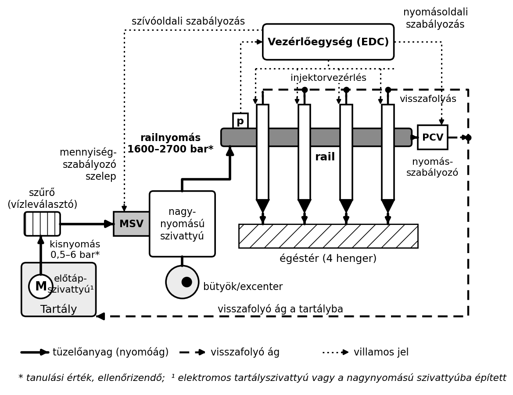
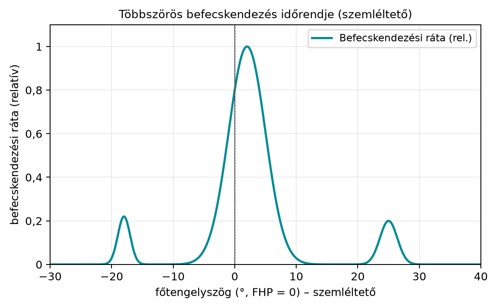

Egy modern dízel autó ügyfele azzal érkezik, hogy a motorja nehezen indul, hidegen hangosan kopog, és a műszerfalon világít a motorellenőrző lámpa. A rendszertesztert csatlakoztatod, és azt látod: a rail-nyomás forgatás közben alig éri el a 150 bar értéket, miközben a vezérlőegység 300 bar fölötti nyomást vár (ellenőrizendő: gyártói érték). Ez a kép azt mondja, hogy a közös nyomásterű, más néven common rail befecskendező rendszerben a nyomás nem épül fel. Ha ezt félrediagnosztizálod, könnyen cserélhetsz drága alkatrészt úgy, hogy a hiba valójában egy eldugult üzemanyagszűrő, egy levegős kisnyomású kör vagy éppen egy belső szivárgásos injektor.
Képzeld el a common rail rendszert úgy, mint egy ház magasnyomású locsolóhálózatát. A szivattyú állandó, magas nyomást tart egy közös csőben, és minden locsolófej elektromos szeleppel pontosan akkor és annyi ideig nyit, amikor azt a vezérlő mondja. A common rail rendszer lényege éppen ez: a nyomás előállítása és az egyes hengerekbe történő adagolás elválik egymástól. A nagynyomású szivattyú a nyomást, a hengerenkénti injektorok szelepe pedig a befecskendezés pillanatát és hosszát szabja meg.

A fenti vázlat a fő hidraulikus és elektronikus egységek kapcsolatát mutatja: a nyilak a tüzelőanyag útját, a pontozott vonalak a vezérlőegység jeleit jelzik. A vezérlőegység a szenzorok jeleit dolgozza fel, és a kisnyomású oldal mennyiségszabályozójával, a nagynyomású oldal szabályzószelepével, valamint az injektorokkal avatkozik be. A tüzelőanyag útja nagyjából így halad: tartály → előtápszivattyú → szűrő → nagynyomású szivattyú → rail → injektorok, a veszteségáramok pedig a visszafolyó vezetékeken keresztül térnek vissza a tartályba.
Definíció. A közös nyomásterű (common rail) dízelbefecskendező rendszer olyan elektronikus dízelbefecskendező rendszer, amelyben egyetlen közös nagynyomású elosztócsőben, a railben az elektronikus vezérlőegység üzemi ponttól függő, nagy nyomást tart fenn, és az egyes hengerekbe a befecskendezést a hengerenkénti, villamos vezérlésű injektorok nyitási idejével adagolja.
Összefüggés. A hidraulikai teljesítmény egy nagynyomású szivattyúnál a térfogatáram és a nyomáskülönbség szorzata:
A common rail szivattyú hajtási teljesítményigénye ennél nagyobb a mechanikai és hidraulikus veszteségek miatt:
Szabály. A common rail rendszert jellemzően az elektronikus dízel-szabályozó (EDC, Electronic Diesel Control) vezérli, amely a vezető terhelési igényéből, a fordulatszámból, a hőmérsékletekből, a légtömeg- és lambda-jelekből, valamint a rail-nyomásból számítja ki a szükséges befecskendezési nyomást, adagot és a befecskendezési időpontokat.
A kisnyomású oldal feladata, hogy tiszta, levegőmentes gázolajat juttasson a nagynyomású szivattyúhoz.
Az egységek:
A kisnyomású kör jellemző nyomása általában 0,5–6 bar között van, típus függvényében (ellenőrizendő: gyártói adat). A levegő vagy a víz ebben a körben káros, mert a nagynyomású szivattyú kenését és hűtését is az üzemanyag végzi.
A common rail nagynyomású szivattyú nem hengerenként adagol, mint a hagyományos soros vagy elosztós adagoló. Feladata csupán az, hogy a railbe állandó nagynyomást állítson elő. A szivattyú lehet egy-, két- vagy többdugattyús radiáldugattyús kialakítású. A dugattyúkat bütyök vagy excentertárcsa mozgatja, és a kimenőnyílások a közös railbe csatlakoznak.
A beépített mennyiségszabályozó szeleppel a szivattyú szívóoldali térfogatáramát úgy csökkentik, hogy a motor éppen csak a szükséges üzemanyagot nyomja a railbe. Ez az úgynevezett szívóoldali szabályozás, amely energiát takarít meg és csökkenti a visszafolyási hőveszteséget.
Megjegyzés. A common rail szivattyú sérülése gyakran fémforgácsot juttat a railbe és az injektorokba, ezért a szivattyú cseréjekor a teljes nagynyomású rendszert tisztítani vagy a gyártó szerinti alkatrészeket kell cserélni.
A rail acél elosztócső, amely nyomástárolóként tartja az üzemanyagot, csillapítja a szivattyú és az injektorok okozta nyomáslüktetést, és egyenletesen látja el az injektorokat. A railen van a nyomásérzékelő, amely a pillanatnyi nyomást villamos jellé alakítja.
A nyomás érzékelése általában piezo-rezisztív elemű érzékelővel történik. A jellalak tipikusan 0,5 V közelében kezdődik 0 bar nyomás mellett, és nagyjából 4,5 V közelében éri el a maximális mérési tartományt (ellenőrizendő: gyártói jelleggörbe). A vezérlőegység ezt a jelet hasonlítja össze a kívánt nyomással, és szabályozó beavatkozással tartja a rendszert a kívánt ponton.
A common rail rendszerekben kétféle nyomásszabályozási hely létezik.
Szívóoldali mennyiségszabályozás. A mennyiségszabályozó szelep a nagynyomású szivattyúhoz kerülő üzemanyag mennyiségét fojtja. Ha kevesebb üzemanyagot enged be, akkor a szivattyú kevesebbet pumpál, a rail-nyomás csökken. Ez a gazdaságos, hőtermelést elkerülő alapbeállítás.
Nyomásoldali szabályozás. A railen elhelyezett nyomásszabályozó szelep a felesleges üzemanyagot a visszafolyó körbe engedi, ha a nyomás túl nagy. Ez gyors beavatkozást tesz lehetővé, például alapjáratra váltás vagy hirtelen terhelés-visszavétel esetén. Modern rendszerekben ez a szelep gyakran biztonsági lefúvó funkciót is ellát.
Összefüggés. A gyakorlatban a két szabályozást együtt használják: a mennyiségszabályozó szelep az alap nyomásszintet tartja, a nyomásszabályozó szelep pedig a gyors, finom korrekciót és a túlfúvás elleni védelmet végzi.
A common rail injektor egy elektromosan vezérelt, közvetlen befecskendező fúvóka. A fúvóka nyitását és zárását a vezérlőtér nyomásesése, valamint a fúvókatűre ható nyomás eredője szabályozza.
A mágnesszelepes injektorban az üzemanyag egy beömlő fojtáson keresztül a tű feletti vezérlőkamrába jut, ahonnan egy kimenő fojtón át távozhat a visszafolyó körbe. Nyugalmi állapotban a mágnesszelep zár, a vezérlőkamra nyomása azonos a rail nyomásával, és a tűt a rugóerő is zárva tartja.
Amikor az EDC a szelepet nyitja, a kimenő fojtás szabaddá válik, a vezérlőkamra nyomása leesik. A tű csúcsára alulról ható rail-nyomás felülkerekedik, a tű megemelkedik, és a fúvókafuratokon keresztül porlaszt az üzemanyag. Amikor a vezérlőegység lezárja a szelepet, a vezérlőkamra nyomása újra felépül, és a tű gyorsan lezár.
Az ábrán látszik a „paradoxon” feloldása: zárt állapotban a vezérlőkamrában is railnyomás van, és mivel a vezérlődugattyú felülete nagyobb, mint a tűváll felülete, a lefelé ható erő (a rugóval együtt) zárva tartja a tűt. Nyitáskor a kiömlő fojtón (A) több távozik, mint amennyi a szűkebb beömlő fojtón (Z) pótlódik, ezért a kamra nyomása leesik, és a tűvállra ható railnyomás felemeli a tűt; a kamrából távozó tüzelőanyag a visszafolyó ágba jut.
A piezo inline injektor alapelve, hogy a vezérlőkamra helyett vagy mellett egy piezo-kerámia elem közvetlenül, nagyon kis mozgási tömeggel mozgatja a hidraulikus kapcsolóelemet vagy a fúvókatűt. A piezo elem a feszültség hatására rendkívül gyorsan, néhány mikrométert rövidül vagy nyúlik.
Példa. Míg egy mágnesszelepes injektornál a villamos jelet a szelep induktív tekercse, majd a hidraulikus nyomásváltozás is késlelteti, a piezo inline injektor nyitása lényegesen gyorsabb lehet. Ezért a piezo injektor több, egymáshoz nagyon közeli befecskendezést tud megvalósítani.
A common rail rendszer nagy előnye az, hogy a befecskendezési cikluson belül több kisebb adagot is ki tud adni.

A fenti szemléltető diagram a felső holtpont (FHP) körül három csúcsot mutat: a kis előbefecskendezést, a nagy főbefecskendezést és a kisebb utóbefecskendezést.
A mágnesszelepes injektor esetében a befecskendezések közötti minimális szünet nagyobb, mint a gyorsabb piezo injektornál, ezért a piezo rendszer finomabb, akár 5–7 befecskendezési eseményt is képes egy ciklusba illeszteni (ellenőrizendő: gyártói rendszer jellemzője).
Az injektorokból folyamatosan kis mennyiségű üzemanyag távozik a visszafolyó ágon. Ez részben a fúvókatű vezetésének kenését szolgálja, részben a vezérlőkamra kiürítéséből származik. A gyártó megadja a normál visszafolyás mértékét. Ha egy injektor visszafolyása hirtelen megnő, az általában belső tömítetlenségre, kopott ülésekre vagy sérült vezérlőelemre utal, és a rail-nyomás felépítését is akadályozza.
Továbbvitt eredmény. A common rail rendszer nyomásszabályozása, a mágnesszelepes és piezo injektor működése, valamint a többszörös befecskendezés emissziós hatása alapvető a Dízel-utókezelés: oxidációs katalizátor, NOx-tároló, SCR és AdBlue, részecskeszűrő, a Dízeldiagnosztika: adagolás, common rail, PDE és EDC, valamint a(z) A kenő-, hűtő- és tüzelőanyag-rendszer javítása alfejezetekben.
Számítás. Mennyi hidraulikus teljesítmény szükséges a nagynyomású szivattyúnál, ha a rendszer 1500 bar nyomáson percenként 0,8 liter gázolajat szállít, és a hajtási hatásfok 85%?
Adott:
Keresett: és .
A hidraulikus teljesítmény:
A szivattyú hajtásához szükséges tengelyteljesítmény 85% hatásfokkal:
Ellenőrzés. Az eredmény nagyságrendje reális: egy középkategóriás személygépkocsi common rail szivattyújának hajtási igénye néhány kW nagyságú, mert a szivattyú csak a szükséges üzemanyag-mennyiséget szállítja.
Számítás. Egy négyhengeres, négyütemű dízelmotor 1800 1/min fordulatszámon dolgozik, a befecskendezési adag hengerenként és ciklusonként 22 mg. Mennyi a becsült óránkénti fogyasztás kilogrammban és literben?
Keresett: kg/h és l/h.
Négyütemű motornál egy henger két fordulatonként fecskendezik, ezért a percenkénti befecskendezések száma:
A percenkénti tömegáram:
Ha a gázolaj sűrűsége , akkor:
Ellenőrzés. Ez egy 2 literes dízelmotor közepes részterhelésének felel meg (kb. 23 kW, ha a fajlagos fogyasztás g/kWh); teljes terhelésen az adag kb. kétszeres (ellenőrizendő: gyártói adat).
A common rail rendszer ellenőrzésekor a következőket kell végigjárni.
Az értékek mindig gyártói adatok, a műszeres mérés nem megkerülhető.
Diagnosztikai eset. Egy 2,0 literes common rail dízelmotor nem indul, csak hosszú indítózás után. A hibakód: alacsony rail-nyomás. A diagnosztikai műszer alapján forgatás közben a rail-nyomás 140 bar, a kívánt minimum 250 bar (ellenőrizendő: gyártói érték). A kisnyomású oldal nyomása 3 bar körül van, a szűrő viszont sötét, elöregedett.
A hibakereső lánc:
A tanulság: a nagynyomású szivattyút nem cseréljük addig, amíg a visszafolyást és a kisnyomású kört nem ellenőriztük.
Cél: az injektorok belső szivárgásának összehasonlító vizsgálata.
Jármű- és adatazonosítás: rendszám, alvázszám, motorkód, gyártó típusa, alkalmazott befecskendező rendszer (pl. Bosch CP3/CR, Delphi, Denso – ellenőrizendő).
Szükséges szerszámok: visszafolyásmérő készlet, mérőedények, kipufogógáz-elszívó, felitató anyag, motorburkolat-kiszedő, védőszemüveg, vegyszerálló kesztyű, tiszta rongy, gyártói diagnosztikai műszer.
Biztonsági korlát. A feladat tanműhelyi környezetre, oktató felügyeletére és a gyártói javítási utasítás betartására vonatkozik; a megadott értékek tanulási példák.
Figyelem. A common rail rendszer nyomása akár 1600–2700 bar is lehet (ellenőrizendő: típus szerint). A nagy nyomás alatt kilépő üzemanyagsugár bőrbe hatolva súlyos, gyakran amputációval járó sérülést okoz. A nagynyomású rendszert soha nem bontjuk a gyártói nyomásmentesítés nélkül, és a sugár útjába nem nyúlunk.
Tilos. A befecskendezés alatt álló motornál a nagynyomású csatlakozót, injektort vagy railcsövet lazítani. A hibás rendszeren a nyomásmentesítés előtt elektromos csatlakozót sem húzunk ki, mert a maradéknyomás váratlan kiáramlást okozhat.
Lépések:
A rajzon a visszafolyó csöveket leválasztották, és minden injektorhoz számozott mérőcső tartozik; a 3. injektor visszafolyása a többi négyszerese, ezért kiugró, akkor is, ha a példahatár alatt marad. A sraffozott elemeket (rail, nagynyomású csövek, injektorcsatlakozók) járó motornál tilos bontani. A HTML-változatban a mért értékek és a gyártói határ megadható; a határ feletti és a kiugró injektor vastag kerettel jelenik meg.
Környezetvédelem. A gázolajat és a szennyezett törlőrongyot veszélyes hulladékként kell gyűjteni és kezelni. A kifolyt üzemanyagot nem szabad csatornába vagy talajra engedni.
Hiba. A tanuló azt gondolja, hogy a common rail injektor a gázpedálállás alapján mechanikusan adagol, mint egy hagyományos adagoló. Helyes gyakorlat: a gázpedálállás csak egy bemenő jel az EDC-nek; a nyomást és az adagot a vezérlőegység határozza meg.
Hiba. A railen lévő nyomást a fúvóka nyitónyomásával keverik össze. Helyes gyakorlat: a rail-nyomás a közös elosztócső üzemi nyomása, a fúvóka nyitását az injektor szelepe vezérli; a hagyományos nyitónyomás fogalma itt más értelmet kap.
Hiba. A nagynyomású rendszeren a gyártói nyomásmentesítés nélkül csavart ki egy csatlakozót, mert a motor leállítása után „úgyis megszűnt a nyomás”. Helyes gyakorlat: mindig a gyártó szerinti nyomásmentesítés, védőkesztyű, arcvédő és a sugár útjának elkerülése.
Hiba. Az alacsony rail-nyomás miatt azonnal nagynyomású szivattyút cserél, miközben egy injektor visszafolyása vagy a kisnyomású oldal ellenőrzése nem történt meg. Helyes gyakorlat: először a kisnyomású kör, az üzemanyagszűrő és az injektor visszafolyás mérése.
1. feladat (A). Sorold fel a common rail rendszer fő egységeit, és nevezd meg a két nyomásszabályozási beavatkozási helyet.
2. feladat (A). Egy nagynyomású szivattyú 800 ml/min gázolajat szállít 1200 bar nyomásra. Mekkora a hidraulikus teljesítmény? A hatásfok 0,8, mekkora a hajtási teljesítmény?
3. feladat (B). Egy hathengeres, négyütemű common rail motornál 2000 1/min fordulatszámon a befecskendezett mennyiség 35 mg ciklusonként. Becsüld meg az óránkénti fogyasztást kg/h-ban és l/h-ban, ha a gázolaj sűrűsége 830 kg/m³!
4. feladat (B). Rajzolj fel vagy írj le egy egyszerű common rail hidraulikus vázlatot: tartály, előtápszivattyú, szűrő, mennyiségszabályozó, nagynyomású szivattyú, rail, nyomásérzékelő, nyomásszabályozó, négy injektor. Jelöld a nyomásoldali és a visszafolyó ágat!
5. feladat (C). Magyarázd el, miért lehet a piezo inline injektorral finomabb többszörös befecskendezést megvalósítani, mint a hagyományos mágnesszelepes injektorral. Milyen emissziós előnye van az elő- és utóbefecskendezésnek?
6. feladat (D). Egy common rail dízelautó nem indul. A diagnosztikai műszer forgatás közben 110 bar rail-nyomást mutat, a kívánt érték 280 bar (ellenőrizendő). Sorold fel a lehetséges okokat, és írd le, milyen sorrendben mérnél!
1. feladat. Fő egységek: kisnyomású kör (tartály, előtápszivattyú, szűrő, mennyiségszabályozó), nagynyomású szivattyú, rail, nyomásérzékelő, nyomásszabályozó szelep, injektorok; a szabályozás helye szívóoldali mennyiségszabályozás és nyomásoldali rail-szabályozás.
2. feladat. Adott:
Hidraulikus teljesítmény:
Hajtási teljesítmény:
3. feladat. Négyütemű hathengeres motor befecskendezései percenként:
Percenkénti tömeg:
Térfogatáram:
4. feladat. Az elvi vázlat sorrendben: tartály → előtápszivattyú → szűrő → mennyiségszabályozó → nagynyomású szivattyú → rail (elosztócső) → négy injektor. A railen nyomásérzékelő és nyomásszabályozó van; a visszafolyó ág az injektorból és a nyomásszabályozóból a tartályba vezet. A szívóoldali szabályozás a szivattyú előtt, a nyomásoldali szabályozás a railen történik.
5. feladat. A piezo elem a feszültség hatására nagyon gyorsan, kis tömeggel mozdul el, ezért az injektor nyitási és zárási ideje rövidebb, mint az induktív mágnesszelepnél. Így az elő-, fő- és utóbefecskendezés egymáshoz közelebb kerülhet, az adagok pontosabbak. Az előbefecskendezés csökkenti az égési zajt és a NOx-képződést, az utóbefecskendezés emeli a kipufogógáz-hőmérsékletet a részecskeszűrő regenerálásához és csökkentheti a koromkibocsátást.
6. feladat. Lehetséges okok: levegős vagy eldugult kisnyomású oldal, hibás előtápszivattyú, eltömődött szűrő, ragadt vagy hibás mennyiségszabályozó, kopott nagynyomású szivattyú, megnövekedett injektor-visszafolyás, hibás nyomásérzékelő. Mérési sorrend: először hibakódok és élő adatok ellenőrzése, majd kisnyomású nyomás mérése, szűrő ellenőrzése, levegőmentesség; ezután injektor visszafolyás mérés; végül nagynyomású szivattyú nyomásteljesítményének vizsgálata a gyártói eljárás szerint.
A common rail rendszerben a nagynyomású szivattyú egy közös elosztócsőben, a railben tartja az üzemi nyomást, a hengerenkénti adagolást pedig elektromos vezérlésű injektorok végzik. A nyomást szívóoldali mennyiségszabályozó és nyomásoldali rail-szabályozó állítja be; a railen nyomásérzékelő szolgáltatja a visszacsatoló jelet. A mágnesszelepes injektor vezérlőkamrás nyomáseséssel emeli a fúvókatűt, a piezo inline injektor gyors piezoelemmel finomabb többszörös befecskendezést ér el. Az előbefecskendezés a zajt és a NOx-ot, az utóbefecskendezés a DPF-regenerálást segíti. A rendszert csak a gyártói nyomásmentesítés után szabad bontani; a nagynyomású üzemanyagsugár bőrbe hatolva súlyos sérülést okoz. A diagnosztikában a rail-nyomás, a visszafolyás és a kisnyomású oldal ellenőrzése az elsődleges lépés. ∎